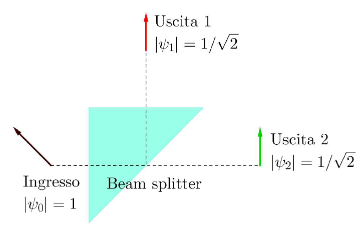
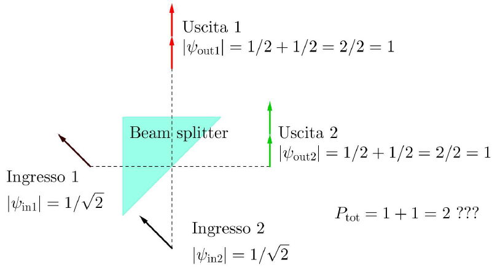
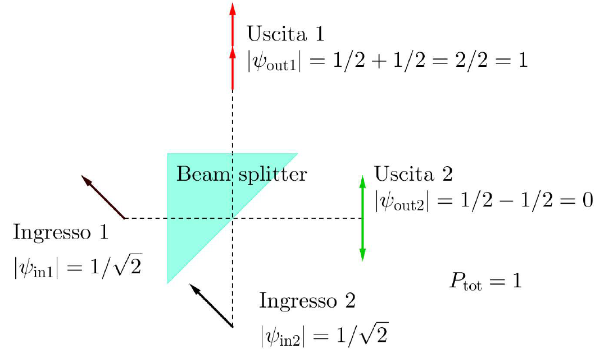
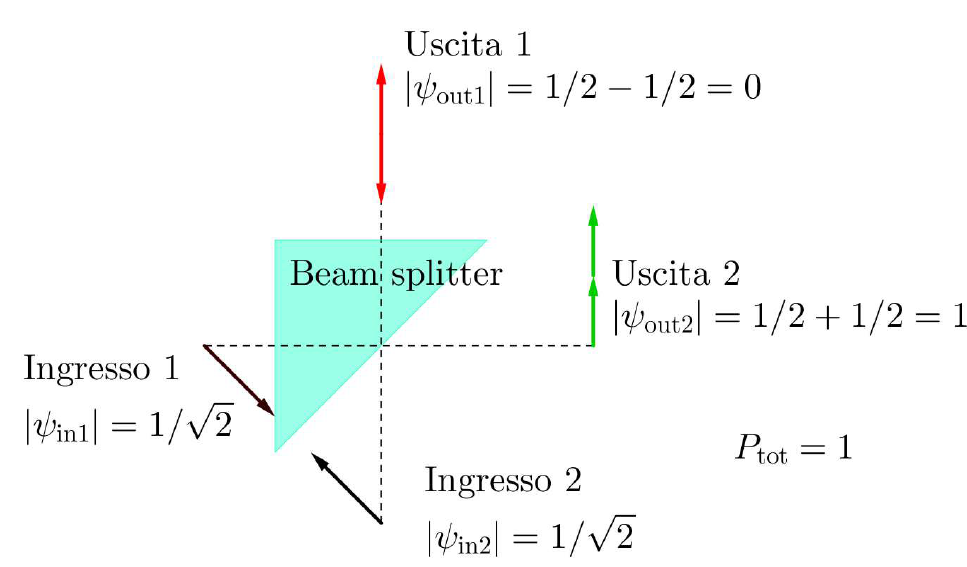
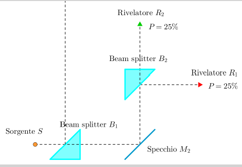
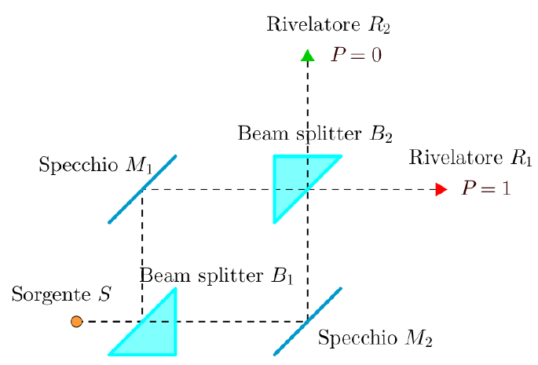

|

|
Appare chiaro che il modulo della freccina dopo ciascuna delle due uscite debba
essere uguale a \( 1/\sqrt{2} \text{ in modo che le proabilità siano al 50%:} 1/2+1/2 \).
Notiamo che la conservazione della probabilità è violata nel caso in cui vi
siano due cammini indistinguibili che portano il fotone a entrare in ciascuno dei due ingressi
(left e bottom)

Ma, se si tiene conto anche della regola della riflessione, la probabilità è conservata:
|

|
Per conservare la probabilità occorre tenere conto anche della regola della riflessione.
Electric fields \( E_1 \) and \( E_2 \) enter input ports 1 and 2, respectively.
Let us denote as T, R the transmission and reflection coefficients for the beam splitter. They are complex
number, e.g. \( T=|T|e^{jθ} R=|R|e^{jφ} \)
Let us denote with
\( E_{u1} \) and \( E_{u2} \) the electric fields for the two outputs (Uscita1 and Uscita2, respectively).
- Field \( E_1 \) evolves as \( E_1 → T \cdot E_{u1} + R \cdot E_{u2} \)
- Field \( E_2 \) evolves as \( E_2 → R \cdot E_{u1} + T \cdot E_{u2} \)
- Possiamo anche dire che:
\( E_{u1} = T \cdot E_2 + R \cdot E_1 \) e che \( E_{u2} = T \cdot E_1 + R \cdot E_2 \), cioè:
\( \vdue{E_{u1}}{E_{u2}}=\begin{pmatrix}R & T \\ T & R\end{pmatrix} \vdue{E_1}{E_2} \).
Let us denote \( S= \begin{pmatrix}R & T \\ T & R\end{pmatrix}\)
- A lossless device implies that the transformation matrix \(\hat{S} \) is unitary:
\( \begin{pmatrix}R & T \\ T & R\end{pmatrix} \begin{pmatrix}R^* & T^* \\ T^* & R^*\end{pmatrix} = \mdueident \)
cioè valgono le seguenti relazioni (che si desumono da leggi fisiche):
\( \left\{ \begin{array}{c} RR^*+TT^*=1 \\ TR^*+RT^*=0 \\ RT^*+TR^*=0 \\ TT^*+RR*=1 \end{array} \right. \)
-
Una matrice che può descrivere un 50-50 optical beamsplitter può essere:
\( {\color{purple}\frac{1}{\sqrt{2}}\begin{pmatrix} 1 & i \\ i & 1\end{pmatrix} } \) oppure
\( \frac{1}{\sqrt{2}}\begin{pmatrix} i & 1 \\ 1 & i\end{pmatrix} \) .
Infatti: \( \sbeam
\frac{1}{\sqrt{2}}\begin{pmatrix} 1 & -i \\ -i & 1\end{pmatrix} =
\frac{1}{2} \begin{pmatrix} 1-i^2 & -i+i \\ i-i & -i^2+1\end{pmatrix}=
\frac{1}{2} \begin{pmatrix} 2 & 0 \\ 0 & 2\end{pmatrix} \)
E questo avviene indipendentemente dalla fase relativa delle due freccine in ingresso:

In fisica quantistica si dice che le quantità osservabili devono essere espresse da operatori unitari,
ossia dice che si conservano la probabilità in uscita per ogni possibile scelta dei vettori di ingresso (normalizzati)..
|
| 
|
Un beam causa una superposition di possibili stati (fotone trasmesso = \( \ket{0}\)e fotone riflesso = \( \ket{1}\)):
\( α_0 \ket{0} + α_1 \ket{1} = α_0 \vdue{1}{0} + α_1 \vdue{0}{1} = \vdue{α_0}{α_1}\)
Quando un fotone che entra in Sorgente passa per il beam splitter, lo stato diventa:
\( \hat{S} \cdot \ket{0} = \sbeam \vdue{1}{0} = { \color{blue}\frac{1}{\sqrt{2}} \vdue{1}{i} } =
\frac{1}{\sqrt{2}} \ket{0} + \frac{i}{\sqrt{2}} \ket{1} \) e dunque si può misurare su un path con probabilità
\( |\frac{1}{\sqrt{2}}|^2 = \frac{1}{2}\) e sull'altro path con probabilità
\( |\frac{i}{\sqrt{2}}|^2 = \frac{1}{2}\). Il secondo beam splitter dimezza ulteriormente le probabilità e
il risultato appare in accordo con l’intuizione classica.
|
| 
|
In questo esperimento vi sono due cammini possibili per ciascuno dei due rivelatori R1 ed R2 . Si assume che
l’apparato sia costruito in modo da essere completamente simmetrico, in modo tale che tutti i
cammini che vanno dalla sorgente a ciascuno dei due rivelatori abbiano la stessa lunghezza.
Al secondo beam splitter \( B_2 \) arriva ora un fotone (non osservato) il cui stato è descritto da
\( { \color{blue}\frac{1}{\sqrt{2}} \vdue{1}{i} } \).
Dunque il nuovo vettore di stato sarà:
\( \sbeam\frac{1}{\sqrt{2}} \vdue{1}{i} = \vdue{0}{i} = 0 \ket{0} + i \ket{1} \)
cioè il fotone si trova sul secondo path con probabilità \( |i|^2 = 1\).
Il secondo beam splitter \( B_2 \) ha causato una interferenza tra i due cammini in superposition .
Si veda Mach Zehnder interferometer on
geogebra.
Fisicamente, secondo la tecnica di Feynmann, non viene prodotto nei fasori associati ai cammini nessuno sfasamento dovuto alla lunghezza del
cammino. Si conta allora il numero delle riflessioni esterne, dalla quale risulta che i fasori associati ai
due cammini S-R1 saranno in fase, sommandosi costruttivamente mentre quelli associati ai due
cammini S-R2 saranno in controfase, sommandosi distruttivamente, perciò la probabilità di rivelare il
fotone in R2 sarà nulla.
|